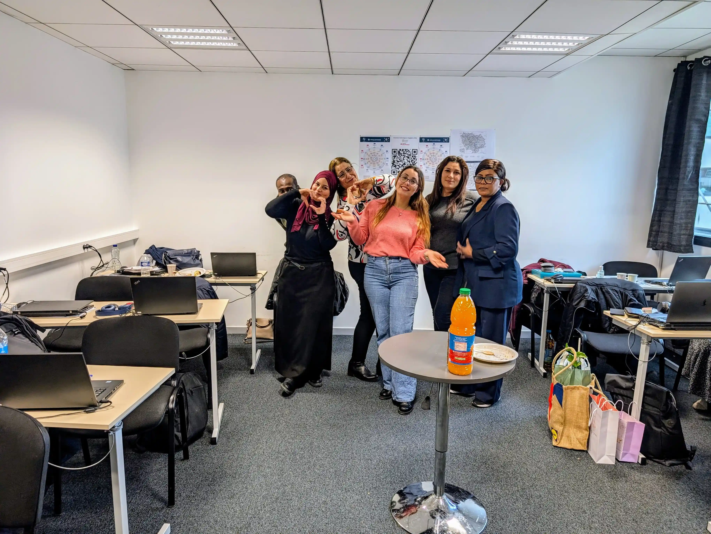

Bienvenue sur notre blog PEE Formation à Chelles, un espace créé par les stagiaires, pour les stagiaires !
Introduction au programme et à notre aventure
Nous sommes un groupe de stagiaires engagés dans le Parcours Entrée dans l’Emploi (PEE) à Chelles. À travers ce blog, nous partageons notre quotidien, nos expériences, nos défis et nos réussites.
Notre groupe
Nous sommes un groupe de stagiaires issus de la formation PEE, réunissant des personnes de différentes nationalités et parcours. Animés par une forte motivation, nous avons un objectif commun : acquérir les compétences nécessaires pour nous intégrer pleinement dans le monde du travail 🛠️. Cette formation représente pour nous une opportunité unique d’apprentissage, de partage et d’évolution professionnelle. À travers divers modules, nous développons nos connaissances en communication, en numérique et en savoir-être. Grâce à l’accompagnement des formateurs et à la richesse de nos échanges, nous progressons chaque jour. Notre diversité est une véritable force, favorisant entraide et collaboration. Ce blog a été créé pour partager nos expériences, nos apprentissages et nos réussites. Il constitue un espace d’expression et de soutien pour tous les stagiaires. Ensemble, nous avançons avec détermination vers un avenir professionnel prometteur.
Pourquoi ce blog ?
Nous avons voulu créer cet espace pour :
- ✅ Partager notre parcours : nos attentes, nos impressions, nos réussites et même nos doutes.
- ✅ Montrer l'évolution que nous vivons au sein de la formation, entre ateliers, rencontres professionnelles et projets concrets.
- ✅ Donner la parole aux stagiaires pour inspirer et motiver ceux qui souhaitent rejoindre le parcours.
Remerciements 😊
Nous tenons à exprimer nos sincères remerciements à toute l'équipe de Ressource Formation Chelles pour leur soutien et leur professionnalisme tout au long de cette formation. Leur accompagnement a été essentiel pour notre progression et nous a permis de relever les défis avec confiance.

Tout d'abord, un grand merci à Jennifer Gomes et à Monsieur Hamlat Belaid, coordinatrice de la formation, pour leur accompagnement et leur disponibilité tout au long de cette expérience. Leur soutien constant a été essentiel à notre parcours.
Nous souhaitons également adresser nos remerciements à Monsieur Omar Zeghni, le directeur de la formation, dont le leadership et l’implication ont grandement facilité l'organisation de cette formation.
Un immense merci à notre formateur, Monsieur Karim Medebeb, pour sa pédagogie, son expertise et sa patience. Grâce à lui, nous avons pu acquérir de nouvelles compétences et approfondir nos connaissances. Son écoute attentive et sa capacité à rendre les concepts clairs ont grandement facilité notre apprentissage. Sa disponibilité et sa bienveillance ont créé un environnement propice à l'échange et à la croissance. Nous lui sommes reconnaissants pour son investissement et ses conseils précieux tout au long de cette formation. Enfin, il a su rendre chaque session agréable et motivante, ce qui a été une véritable source d'inspiration pour nous tous.
Son approche bienveillante et son investissement personnel ont non seulement enrichi nos connaissances techniques, mais aussi renforcé notre confiance en nous-mêmes. Monsieur Karim Medebeb a su, avec aisance, équilibrer rigueur et convivialité, créant ainsi une atmosphère stimulante et propice à l'apprentissage. Merci encore pour avoir été un guide si précieux tout au long de cette aventure !
Enfin, nous souhaitons exprimer notre reconnaissance à Maya Amellal, notre remplaçante, pour sa présence et son engagement durant cette formation. Elle a non seulement assuré la continuité de notre apprentissage, mais a également apporté ses précieux savoir-faire, enrichissant ainsi notre expérience et notre compréhension des sujets abordés.
Nous tenons également à remercier chaleureusement Siham Bousbia, notre formatrice, pour son implication et son professionnalisme. Elle nous a fait confiance, nous a accompagnés avec gentillesse dans la préparation du DELF et nous a soutenus dans nos démarches. De plus, bien qu'elle gère un autre groupe, elle a pris en charge ceux d'entre nous qui étaient en recherche de stage et n'avaient pas encore trouvé, nous offrant ainsi une aide précieuse tout au long de notre parcours.
"Nous sommes ravis d'avoir accueilli des stagiaires issus de divers horizons, qui ont enrichi cette formation PEE avec leurs expériences et leur enthousiasme. Un grand merci à chacun d'entre vous pour votre engagement et votre participation ! 🇫🇷🌍🇩🇿🇻🇳🇨🇬🇹🇳🇷🇴🇲🇺🇨🇮🇹🇷🇸🇩🇲🇱🇵🇹🇲🇦"